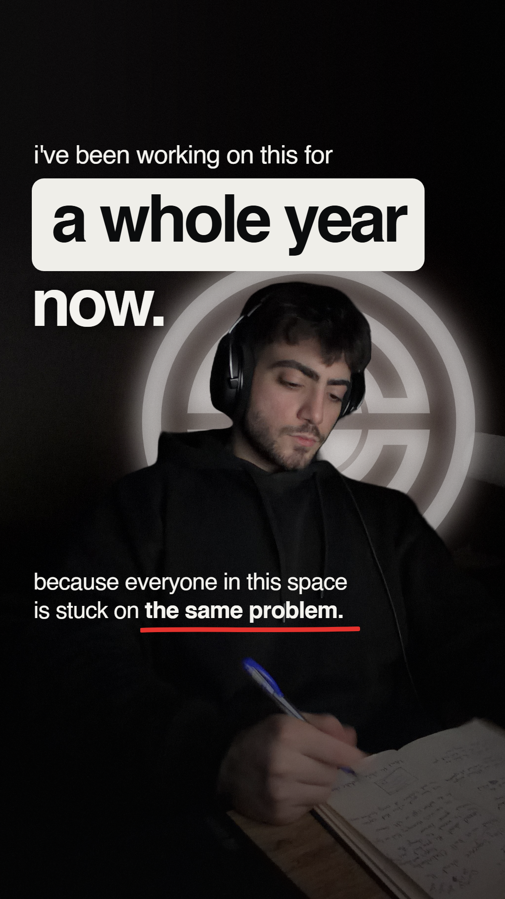

01 / The opening

Copy and design notes
Existing copy i've been working on this for a whole year now. because everyone in this space is stuck on the same problem.
Mockup copy i've been working on this for a whole year now. because everyone in this space is stuck on the same problem.
Claude's opening retained byte-for-byte. The one-year timeline remains a copy review question.